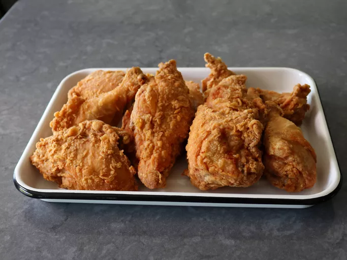

Dooky Chase-Style Fried Chicken

Description
Dooky Chase-Style Fried Chicken is a beloved Southern dish with a rich history. It's known for its crispy, golden-brown exterior and juicy, tender meat inside. The chicken is often seasoned with a blend of herbs and spices, giving it a flavorful kick.
Ingredients
- 4 teaspoons fine salt
- 2 teaspoons freshly ground black pepper
- 1 teaspoon garlic powder
- 1/2 teaspoon cayenne pepper
- 3 large eggs
- 1/4 cup water
- 1 whole chicken
- 2 quarts vegetable oil
Seasoned Flour
- 2 cups all-purpose flour
- 1 teaspoon salt
Steps
- Mix together 4 teaspoons salt, black pepper, garlic powder, and cayenne in a small bowl; set aside
- Whisk eggs, water, and 2 tablespoons of spice mix thoroughly together in a mixing bowl large enough to hold all chicken pieces
- Cut whole chicken into serving-size pieces, ending up with 2 breast halves, 2 thighs, 2 drumsticks, and 2 wings. Alternately, you can use 4 pounds of bone-in, skin-on pre-cut chicken pieces
- Add chicken pieces to the egg marinade and toss thoroughly until evenly coated. Press and compact chicken pieces down into the bowl so they are covered with marinade
- Cover with plastic, and marinate in the refrigerator for 12 to 24 hours. Toss chicken pieces several times during the marinating process
- Mix flour and the 1 teaspoon salt together in a shallow pan
- Preheat vegetable oil for deep frying to 350 degrees F (180 degrees C)
- When ready to fry, use tongs to pull chicken out of marinade, letting excess marinade drip off. Coat thoroughly with seasoned flour, and shake off excess. Carefully place in the hot oil
- Add breast pieces first, and fry for 3 to 4 minutes before adding thighs, legs, and wings. Once all the chicken is in the oil, fry for 15 to 18 minutes, or until chicken is no longer pink at the center and juices run clear
- Transfer chicken to a rack to drain, and let cool 5 minutes before serving